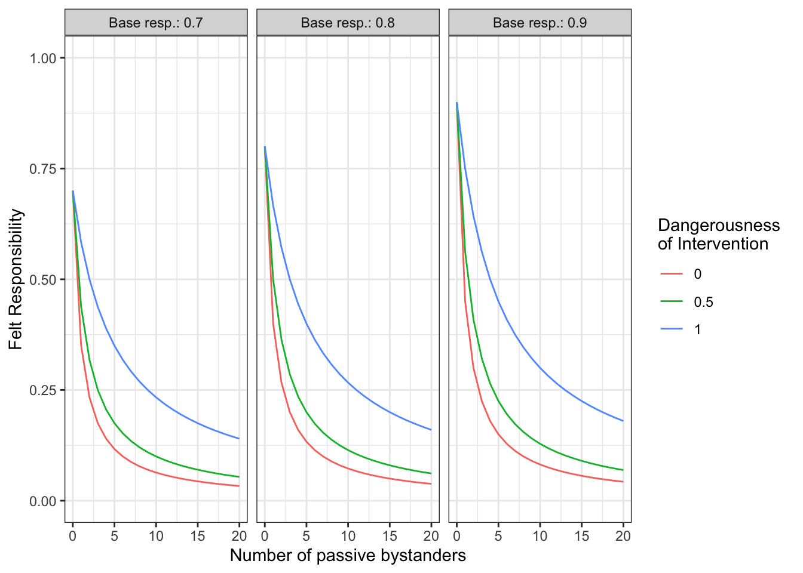

#---------------------------------------------------------------------
# This is one function in my VAST
# - It has three input variables: baseResp, NOPB, pDoI
# - It has two parameters in the function, which however have been
# fixed to the values 0.8 and 0.2.
#---------------------------------------------------------------------
#' Compute felt responsibility
#'
#' The base responsibility of "helping when alone" is divided by the
#' number of passive bystanders. The strength of the bystander effect
#' is modulated by the factor alpha, which is itself a function of
#' the perceived danger of intervention. It is an attenuation/boost
#' factor for the decline/steepness of the 1/x curve. alpha ranges
#' from 0 to Inf, where 0=no bystander effect (BSE), 1=classical BSE
#' and values > 1 stronger-than-classical BSEs.
#'
#' @param baseResp The probability to help when one is alone.
#' @param NOPB The number of passive bystanders
#' @param pDoI The perceived danger of intervention (ranging from 0..1)
#' @return The felt responsibility
#'
get_feltResp <- function(baseResp, NOPB, pDoI) {
alpha <- (0.8 - pDoI*0.8)+0.2
feltResp <- baseResp / (alpha*NOPB + 1)
return(feltResp)
}
#---------------------------------------------------------------------
# Prepare data for plotting
#---------------------------------------------------------------------
# define the levels that should be plotted
plot_data <- expand.grid(
baseResp = c(0.7, 0.8, 0.9),
NOPB = 0:20,
pDoI = c(0, 0.5, 1)
)
# nicer labels for facet
plot_data$baseResp_label <- paste("Base resp.:", plot_data$baseResp)
# compute outcome variable
plot_data$feltResp <- get_feltResp(
baseResp = plot_data$baseResp,
NOPB = plot_data$NOPB,
pDoI = plot_data$pDoI
)
#---------------------------------------------------------------------
# Construct the ggplot
#---------------------------------------------------------------------
library(ggplot2)
p1 <- ggplot(plot_data, aes(x=NOPB, y=feltResp, color=factor(pDoI))) +
geom_line() +
facet_grid(~ baseResp_label) +
labs(
x="Number of passive bystanders",
y="Felt Responsibility",
color="Dangerousness \nof Intervention" # \n makes a line break
) +
scale_y_continuous(limits=c(0, 1)) +
theme_bw()
print(p1)